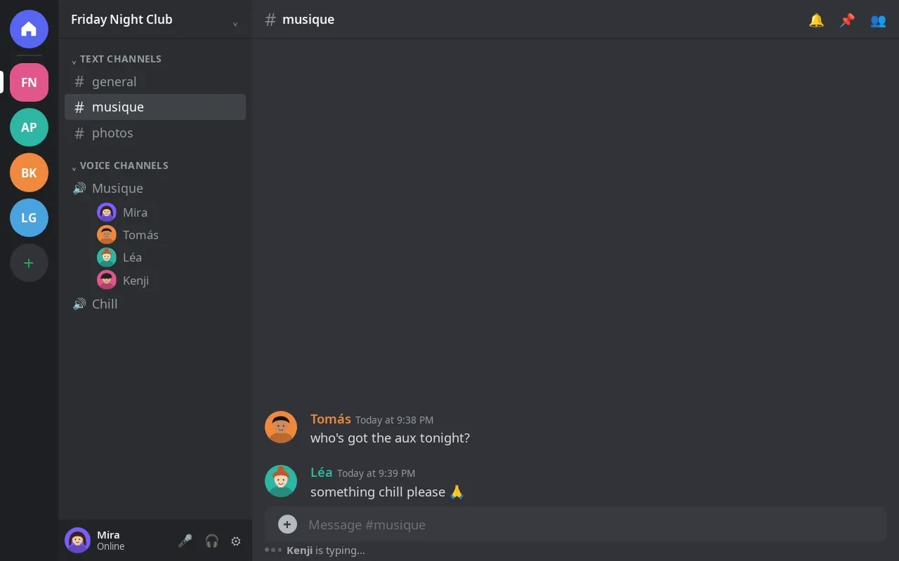
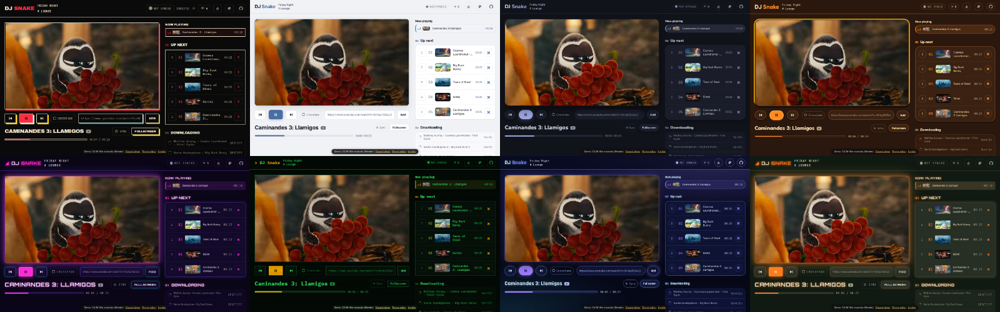

DJ
Snake
A self-hosted Discord music bot. It plays YouTube in your voice channel and serves a live clip page where the video stays in sync with the audio.

What you get
Live clip page
Every server gets a link with the muted video of the current track, synced with the voice audio, and a queue anyone with the link can control.
Automix
Off-topic segments cut with SponsorBlock, loudness normalised to -14 LUFS, silences trimmed, smooth fades. Optional crossfade between tracks.
Seven themes
Arcade, Minimal, Nuit, Vinyle, Club, Terminal and a custom one with your colors, name and logo. Admins pick the default, viewers pick their own.
One queue per server
Independent queues, playlists and radio links, with previous, seek, jump, reorder and remove from Discord or from the page.
One live status message
A single panel edited in place instead of a channel full of announcements. Commands answer with a reaction.
Self-hosted, low upkeep
Docker Compose with a PO token sidecar. yt-dlp upgrades itself on start, and it keeps working when YouTube changes.
Make it yours

Self-host it in 3 commands
# create a Discord bot, enable the Message Content intent, then:
$ git clone https://github.com/Theroxat/DJ_Snake.git && cd DJ_Snake
$ cp .env.example .env # set DISCORD_TOKEN
$ docker compose pull && docker compose up -dThen join a voice channel and send !play <youtube url>. Full setup, configuration and troubleshooting are in the README.